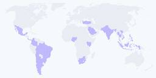

Stripe Blog
https://stripe.com/blog
Follow the Stripe blog to learn about new product features, the latest in technology, payment solutions, and business initiatives.
フィード

Why global workers are driving demand for stablecoin payouts
Stripe Blog
Platforms like DoorDash, Meta, and Deel already enable stablecoin payouts for global workers. We surveyed 2,300 workers in 20 countries to see what's driving stablecoin demand, where the opportunity is highest, and how other platforms can adapt.
4日前
New currency capabilities for global businesses to cut FX costs
Stripe Blog
Two product upgrades make it easy for global businesses to manage FX entirely on Stripe. We’re expanding multicurrency settlement to more markets and currencies, and we’re introducing the ability to convert currencies instantly—all on Stripe.
6日前

Mapping the AI economy
Stripe Blog
AI companies are undergoing rapid global expansion while achieving unprecedented rates of growth. We analyzed Stripe data to understand where global demand is the strongest, and how companies can build to best capture that demand.
12日前
Analyzing the evidence that helps businesses win “product not received” disputes
Stripe Blog
To understand what can influence win rates, we analyzed evidence packets from one million disputes over a 16-week period. Here’s what the data shows and what it means for how you mitigate disputes.
1ヶ月前
Four travel and hospitality trends from HITEC 2026
Stripe Blog
More than 6,000 hospitality executives and operators gathered in San Antonio last week for the HITEC conference. The big topic: whether the industry’s AI investment is actually working. Across four days and over 50 meetings, four trends stood out.
2ヶ月前
What Link data tells us about AI spending
Stripe Blog
We analyzed spending patterns across the 250 million customers paying with Link. We found that Link customers are spending more on AI than they were three months prior, investing heavily in platforms that let them build with AI.
2ヶ月前
Stripe Projects adds new agent integrations, more providers, and custom developer controls
Stripe Blog
Our data shows that agents are now fully capable of independently writing code and integrating with APIs like Stripe’s. And yet, many of the steps adjacent to writing code are still too hard for agents to do on their own. We’re expanding Stripe Projects to solve this.
2ヶ月前
New ways to turn global demand into revenue
Stripe Blog
At Sessions 2026, Stripe unveiled dozens of products and capabilities to help businesses turn global demand into revenue. See how to go global faster with localized checkout and Adaptive Pricing, smarter fraud tools, multicurrency treasury support, and automated tax compliance.
3ヶ月前
The future of agentic commerce is here
Stripe Blog
Explore how AI agents are transforming commerce at Stripe’s Agentic Commerce Next roadshow. Reserve your spot in Seattle.
3ヶ月前
Rethinking risk in the age of AI
Stripe Blog
Join senior risk and payments leaders in Seattle to explore how AI is reshaping fraud strategy. Seats are limited.
3ヶ月前